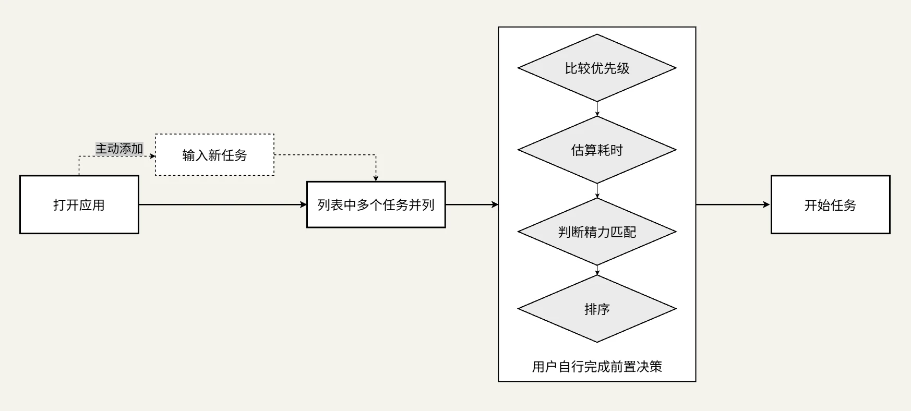
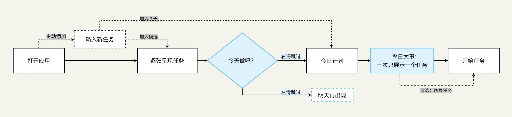
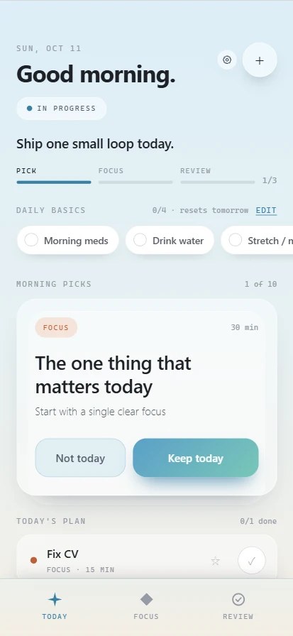
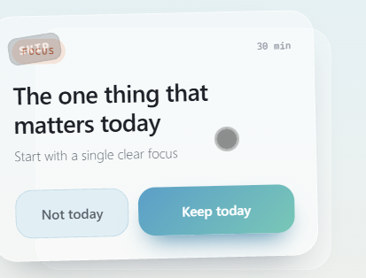
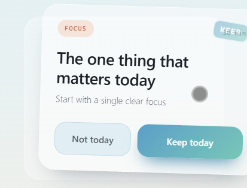
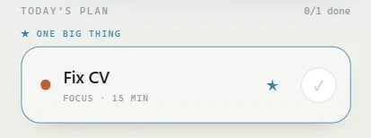
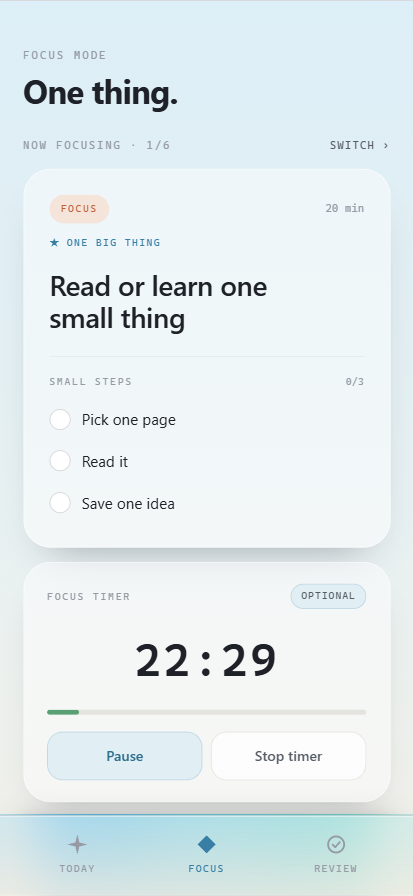
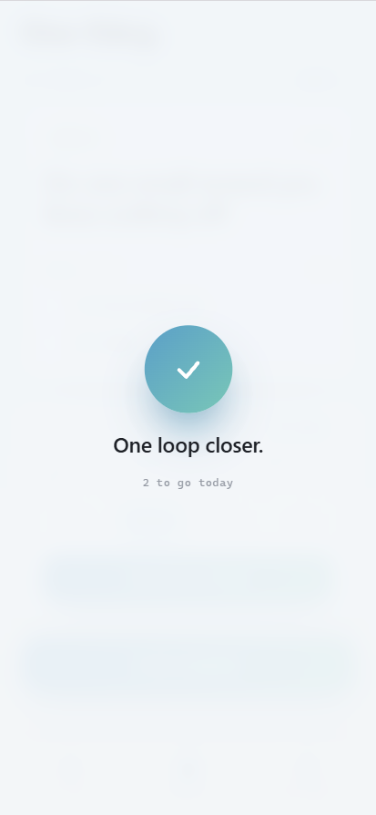
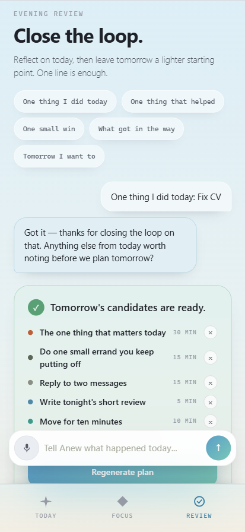

01 / 核心用户
面对多个待办事项容易无从下手、存在任务启动困难，并可能因任务积压而回避使用待办工具的人。
在使用传统待办应用时，我常常陷入一种循环：兴致勃勃地列出任务，却迟迟无法开始行动。
在面对一长串待办事项时，通常需要比较优先级、估算耗时、判断精力，再决定从何开始。随着未完成的任务不断累积，打开清单本身也逐渐成为一种压力。
核心设计问题
从管理所有任务，转向开始眼前的一件事。
面对多个待办事项容易无从下手、存在任务启动困难，并可能因任务积压而回避使用待办工具的人。
希望摆脱复杂清单，以更轻量、低压力的方式安排日常事务的人。
需要多项目管理、甘特图、团队协作的用户；以及需要按固定时间点排程、精细规划全天时段的用户。
Anew 尝试改变任务的呈现与选择方式，让用户不必在开始行动前同时比较所有待办事项。
多任务并列 · 集中决策

这是传统清单式任务管理中可能出现的决策路径。面对并列的待办事项，用户往往需要自行比较优先级、估算耗时并安排执行顺序。随着任务不断累积，这些前置判断可能增加开始行动的负担。
逐次判断 · 单任务聚焦

Anew则逐张呈现任务，将同时比较多个选项转化为逐次判断。用户可以左滑跳过，右滑加入今天。对于今天的任务，用户可以按需将一件事设为「今日大事」，无需提前为所有任务排序。
核心差异
区别不在于决策次数的绝对多少，而在于用户是否需要同时面对多个选择。
Pick（选择） 一次只呈现一张任务卡片，让用户判断「今天要不要做」，而不是同时比较整张清单。之后可以进一步对一个任务标星，将其设为「今日大事」。
Focus（专注） 默认只展示一件「今日大事」及其行动步骤。用户可以直接开始，也可以主动切换，无需预先排列所有今日任务。
在确定核心交互方向时，曾对不同的任务组织方式进行比较。
方案一
通过拖动任务调整优先级。
需要比较多个任务并调整先后，排序可能增加启动前的负担。
方案二
提前为任务分配具体时段。
需要估算耗时与安排顺序，增加前期规划成本。
方案三
限制每天最多选择三项任务。
固定数量不够灵活，也未解决从候选任务中筛选的问题。
不要求用户提前排列所有任务，也不强制限制每日任务数量，而是将选择、重点标记与执行分开处理，让用户按需做出判断。
选择
今天做什么？标记
什么最重要？专注
现在做哪件？最终设计方向确定了 Anew 做什么，同样重要的是它不做什么。以下能力被主动排除在当前版本的产品范围之外。
Anew 聚焦个人任务的选择与启动。协作需要额外处理他人的任务、反馈与进度，因此不纳入当前版本。
不引入复杂的项目层级、依赖关系和长期规划视图，避免将每日行动重新转化为大规模的任务整理。
不以连续天数衡量表现，也不设置断签惩罚，避免用户因为中断使用而承受额外压力。
不引入长期完成率、效率排名等绩效指标，当前仅保留与当天行动相关的轻量进度反馈。
产品边界不是功能缺失，而是围绕核心体验做出的主动取舍。
Anew 将每日任务管理组织为三个衔接的页面：Today（选择）→Focus（专注）→Review（复盘）。
界面支持中英文切换，以下展示英文版界面。
上半部分逐张呈现任务卡片，用户可以右滑加入今天、左滑暂时跳过；下半部分展示已选择的今日任务。用户可以为其中一项标星，设为「今日大事」（One Big Thing），且同一时间仅保留一个标星任务。无需提前排列所有任务，也能突出当天的重点。


左滑·暂时跳过

右滑·加入今天

同一时间仅保留一个标星任务
该页面还提供可自定义的日常基础事项，默认包含服药、喝水、伸展活动等。用户可以自由增删修改，清单内容持续保留，仅勾选状态每天重置，帮助用户以更低的操作成本维持日常节奏。
Focus 默认只展示一件当前任务，并优先呈现标记为「今日大事」的任务。用户可以勾选行动步骤、主动切换任务，或按需开启专注计时器。
计时器默认关闭，不构成开始行动的必要条件。完成任务后，界面以克制的视觉反馈与「完成一个循环」（One loop closer）提示确认进展。

不要求提前选择全部任务的执行顺序。

完成后以短暂视觉变化和「One loop closer」确认进展。
通过对话引导用户回顾一天，无需填写完整总结。
遵循温和、非评判的原则：AI先回应你分享的内容，最多提一个轻量追问，不说教、不追加任务。用户也可以把复盘中的想法转成明日候选任务，让当天的反思自然延续到下一次行动。

Anew 通过六套可切换的主题提供不同的视觉氛围，并以统一的文字层级与组件色彩规则，让任务始终保持清晰可辨。
PRIMARY / 无衬线字体
Aa Bb
Good morning.
早上好，今天只做一件小事。
Avenir Next / Segoe UI / 苹方 / 微软雅黑
用于标题、任务内容、正文与主要操作。
SECONDARY / 等宽字体
01:45
MORNING PICKS · 1 OF 10
30 MIN · 12:45
Cascadia Code / SF Mono / Consolas
用于数字、计时器、英文标签与元数据。
Display
44px / 300
03
H1 页面标题
31px / 700
Good morning.
H2 任务标题
27px / 600
One thing at a time.
H3 区块标题
19px / 600
All done for today.
Body 正文
14.5px / 300
Start with a single clear focus.
Label 标签
10.5px / 400
MORNING PICKS · 1 OF 10
同一信息层级，在中英文界面中使用不同的标签排版规则。英文采用等宽字体、大写与较宽字距；中文采用无衬线字体与更紧凑的字距。
MORNING PICKS
ONE BIG THING
30 MIN
Mono · Uppercase · +0.16em
今日候选
今日大事
30 分钟
Sans · 不大写 · +0.04em
六套主题切换时，三级文字灰度与六种任务类型的语义色保持不变。
Primary
Secondary
Tertiary
·
·
·
·
·
·
Anew 围绕任务选择、优先级标记与行动执行建立统一的组件规则。通过一致的卡片结构、明确的主次操作与轻量状态反馈，让用户在不同页面中快速理解界面，而不必重新学习操作方式。
Task Card / 任务卡片
将任务标题、类型、预计耗时与辅助说明组织在同一张卡片中，突出当前需要判断的一项任务。
Start with a single clear focus
任务类型 · 标题 · 辅助说明 · 操作按钮
Actions / 操作按钮
通过渐变、底色与描边区分操作层级，让主要决策更醒目，辅助操作与完成状态保持克制。
PRIMARY主操作
SECONDARY次级操作
SOFT柔和操作
PILLS & STATUS胶囊按钮与状态
Priority / 今日大事
通过独立区块、强调描边与星标区分重点任务和普通任务，每天最多标记一件「今日大事」。
Small Steps / 行动步骤
行动步骤以整行作为点击区域，完成后保留文字并降低视觉权重，让进度可见，同时减少对当前行动的干扰。
Feedback / 完成反馈
通过短暂的完成确认与轻量通知反馈操作结果，避免持续性的视觉奖励或不必要的打断。
see you tomorrow morning
渐进式选择能否让用户在首次使用时自然理解？为探索这一问题，我进行了一次小规模、无操作指导的可用性测试，观察参与者能否独立完成「选择 → 专注 → 完成 → 复盘」，并记录过程中出现的犹豫与误解。
所有参与者均收到相同的任务目标：完成任务选择、专注与复盘。测试过程中不提供操作说明，由参与者自行探索。
任务管理习惯：使用手机备忘录，面对较多任务时难以决定从哪件开始。
任务管理习惯：使用纸质清单记录学习任务，容易反复规划却迟迟不开始。
任务管理习惯：使用 Todoist，习惯任务分类、截止日期与完成勾选。
任务管理习惯：使用滴答清单，偏好浏览全部任务后安排优先级。
任务管理习惯：主要依靠日历、聊天记录和即时记忆处理日常事项。
关注自述有任务启动困难的潜在用户。
观察既有待办清单使用习惯对操作理解的影响。
观察缺乏待办 App 使用经验时的首次理解情况。
参与者均无 ADHD 临床诊断。本次测试仅关注自述的任务启动困难与界面可用性，不用于评估临床效果。
通过六项观察指标，了解参与者在首次使用 Anew 时，对任务选择、核心流程及复盘体验的理解情况。
P01、P02、P03、P05 完成；P04 在规划阶段寻求帮助。
仅 P01 首次采用滑动；其余用户先点击按钮。
五位参与者均找到功能入口。
P01、P02、P03 完成「选择 → 专注 → 完成 → 复盘」；P04、P05 在部分环节需要协助。
P01、P02、P03、P05 表达正向意愿；P04 更倾向保留传统清单工具。
从第一张候选卡片出现，到第一次有效选择。
多数参与者能够理解基础任务选择，但首次规划的完成并不代表整个核心流程都足够清晰。主要障碍集中在手势发现、任务状态理解与复盘反馈。
根据测试中的操作表现与用户反馈，整理出五项主要问题，并提出对应的设计改进方向。
涉及用户：P02、P03、P04、P05
用户原话“我直接点下面的按钮，原来可以滑动？”
用户通过按钮完成任务选择，却没有发现卡片也支持滑动。按钮本身是有效的操作路径，但滑动这一可选交互没有被充分感知。
首次进入时，通过卡片轻微左右摇摆提示滑动操作，同时保留按钮作为等效操作。
涉及用户：P03、P04
用户原话“我刚划掉的任务就不完成了吗？有点不敢点。”
跳过后任务从当前视图消失，用户无法判断任务去了哪里，以及之后是否还会出现。
首次跳过后显示简短状态说明，明确任务的保留方式与再次出现规则。
涉及用户：P04
用户原话“哪个是今天最重要的事？这个有点不明确。”
“我还是想一眼看到全部任务再挑。”
星标与「今日大事」的关联不够明确，属于交互理解问题；希望一次浏览全部任务，则反映了用户既有的清单使用习惯，不必因此放弃逐次选择的设计原则。
首次使用时增加一次性引导，解释星标与「今日大事」的关系，后续仍保留简洁的星标操作。
涉及用户：P02
用户原话“最上面那四个勾是干嘛的？为什么默认有这些？”
用户不理解预设事项的用途，可能将其误认为每天必须完成的任务。
首次出现时简要解释模块用途，并提供清晰的编辑入口。
涉及用户：P05
用户原话“这个步骤是自带的吗？我想自己写的话，在哪里改？”
「快速添加」后自动生成默认步骤，但用户无法编辑或删除，误认为步骤是必填项，增加理解成本。
将任务步骤设为可选，同时支持用户自行添加与编辑；未来将探索 AI 辅助拆解复杂任务的功能。
涉及用户：P01
用户原话“我打中文它回我英文，为什么会这样？”
“它是根据我今天完成的内容来回复的吗？还是随便说说的？”
当前公开 Demo 使用英文预设回复，中文输入无法获得一致的语言反馈；同时未明确说明模拟性质，容易让用户误以为系统已具备真实 AI 理解能力。
补充中文模拟回复，并在界面中明确标注 Demo 使用预设内容。真实 AI 服务留待后续接入与验证。
测试不仅暴露了交互中的理解障碍，也呈现出一些与原始设计意图相符的使用行为。
“我不想一开始就被时间限制，先做一点再说。”
P02 注意到计时器，但选择不使用。
用户无需预先设定时间也能开始行动，正确理解了计时器的可选性质。
“这样一张一张选还挺有意思的。”
P03 对逐张呈现的任务选择方式给出积极反馈。
逐张选择具有一定吸引力，但能否真正降低决策负担，仍需与传统清单模式比较。
“噢我刚划掉的明天还会回来？这个还不错。”
P03 得知跳过不会永久丢失任务后，给出积极反馈。
这一机制符合减轻任务管理压力的设计目标，但仍需要在跳过操作发生时，明确说明任务的去向。
P01、P02 两位自述存在任务启动困难的参与者，均独立完成了「选择 → 专注 → 完成 → 复盘」的核心循环。
可选计时器与逐张选择获得积极反馈，说明部分用户能够在不完成额外设置的情况下进入行动。
P04 更倾向于先浏览全部任务再做决定，说明渐进式选择并不适用于所有用户的既有习惯。
同时，跳过任务后的去向、星标含义等问题表明，减少界面信息也可能增加用户对系统状态的不确定感。
现有观察表明，Anew 的核心交互具有一定的首次使用可理解性。但由于本次测试未设置传统清单模式的对照组，尚不能证明 Anew 能有效缩短任务启动时间，原始效率假设仍需进一步验证。
Anew 是由我独立主导设计、借助 AI 辅助开发完成的个人项目。
识别任务启动困难，明确目标用户、产品定位与功能边界。
辅助需求梳理、功能可行性分析。
规划核心流程与信息架构，定义关键交互及状态规则。
辅助分析交互逻辑、提供实现方案。
探索视觉方向，确定设计语言、信息层级、布局及组件规则。
整理 Markdown 设计规范，生成界面与组件初版。
评审视觉、交互与功能表现，识别问题并确定优化方向。
根据反馈调整样式与交互、排查并修改代码问题。
检查跨页面组件一致性、响应式适配及核心流程完整性。
辅助复用组件、检查布局与运行问题。
决定功能取舍、整理展示内容，推动可运行原型上线。
辅助构建、调试与部署。
AI 能快速提供实现方案，但也可能引入额外功能或破坏既有样式。因此，我逐步建立了一套以设计约束为核心的协作方式。
不只描述效果，也说明什么不能改变：明确目标、涉及页面、交互行为与保留项，避免局部调整影响既有操作逻辑和组件结构。
用统一规则约束生成结果：将色彩、字体、间距、组件状态与交互规则整理为 Markdown 文档，要求 AI 修改前先阅读规范。
将复杂需求拆成可检查的任务：按功能或组件逐步实现，每轮修改后检查效果，再决定下一步，降低问题定位与回退成本。
代码能运行，不代表体验正确：检查任务流转、状态反馈、视觉层级及已有功能是否受到影响，以实际体验决定是否接受修改。
Anew 已实现任务选择、专注、完成与复盘的核心流程，但仍处于原型验证阶段。在体验完整性、交互反馈与长期使用方面，仍有进一步完善的空间。
目前已能够完成用户核心流程，但仍缺少首次使用引导，部分页面的空状态与过渡反馈也有待完善。
AI 复盘与任务规划目前使用模拟回复，尚未上线真实 AI 服务。现有代码已预留真实模型的接入能力，后续仍需完成配置、测试与实际部署。
前期测试中发现，滑动操作、跳过任务后的去向、星标的含义可能造成理解障碍。且「快速添加」会自动生成不可编辑的默认步骤，限制了用户自主拆解任务的能力。
说明简洁的界面不等于清晰的体验。除了让用户理解操作方式，还需要减少不必要的默认设置，给予用户适当的选择权。
目前六套主题已基本建立，但部分浅色文字与背景的对比度不足，不同主题之间也存在少量样式差异。
部分动画尚不能根据用户的系统设置自动减少，屏幕阅读器支持也需要进一步完善。未来需要在保持视觉风格的同时，让界面对更多用户更加友好。
早期曾考虑根据用户精力状态推荐任务，但这意味着用户在开始前需要额外判断自己的状态，因此最终没有将其加入当前设计。
现阶段 Anew 采用无需注册的本地数据存储，降低首次使用门槛，也避免默认上传个人任务数据。虽然暂不支持跨设备同步，但是否引入账号体系，将根据后续真实使用需求决定。
从最初的设计构想，到逐步完成可运行的移动端 Web 应用，Anew 让我有机会将产品思考、交互设计与 AI 辅助开发结合起来。
这次实践也让我更加明确：好的设计并不意味着不断增加功能，而是理解用户真正需要什么，并尽可能减少不必要的负担。
Anew 的目标不是让每一天都更高效， 而是让开始一件事变得更容易。